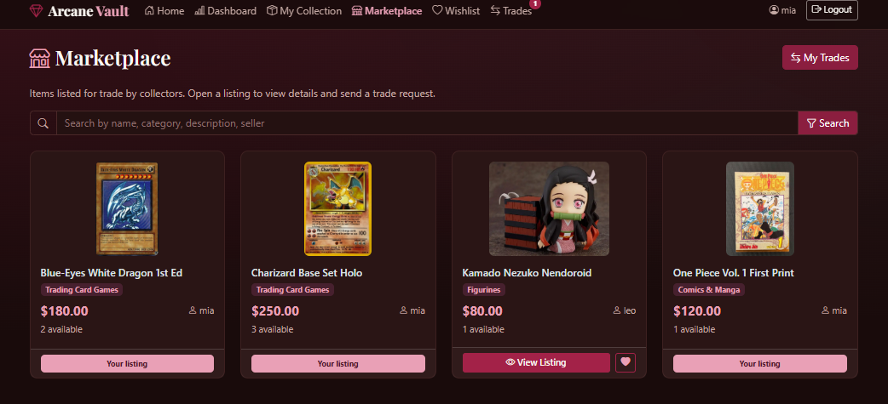
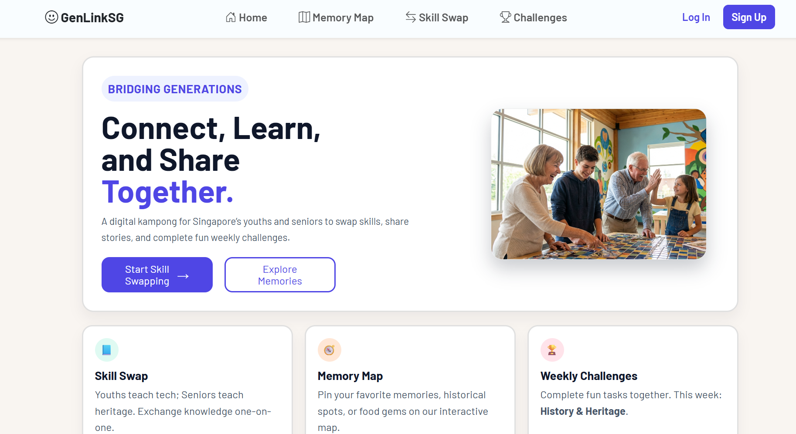

Client website workInternship contribution
WordPress Website Maintenance
Worked on client WordPress websites and contributed to their ongoing maintenance during my internship at Login Media Marketing Pte Ltd.
Worked on client WordPress websites and contributed to their ongoing maintenance during my internship at Login Media Marketing Pte Ltd.

A collector platform combining collection management, marketplace listings, wishlists, trade requests, and an analytics dashboard.

Connecting youths and seniors through a skill exchange platform, with teach / learn listings and a clear request flow.

Exploring walk-in waiting times, care stages, and service patterns through Power BI reports and DAX measures.

A survey-based group project on student spending. My work focused on testing the S$400 benchmark and interpreting the results in Python.

A youth-friendly club website that makes performances, schedules, and joining information easy to explore.
Showing 6 projects.